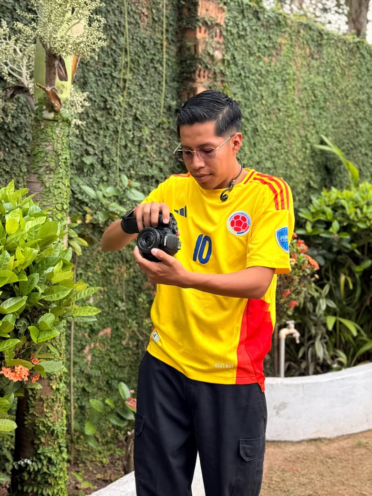

Fotografía que detiene el momento.
Deporte, sesiones y contenido para marcas. Reserva tu fecha directo por WhatsApp.

Soy Diego Román.
Me dedico a la fotografía y vivo en la ciudad de Trinidad. Realizo sesiones en exteriores para cumpleañeras, niños, parejas y familias, enfocándome en capturar momentos naturales, emociones reales y recuerdos auténticos.
Cada sesión es una experiencia pensada para capturar lo que realmente importa: luz natural, gestos espontáneos y conexiones reales. Fotografías que se sienten hoy y se recuerdan mañana.
Ojo: solo exteriores.
Portafolio
Catálogos y precios
¿Ya tuviste tu sesión?
Mira las galerías públicas o abre el enlace privado que te envié para descargar tus fotos.
Ir a galerías